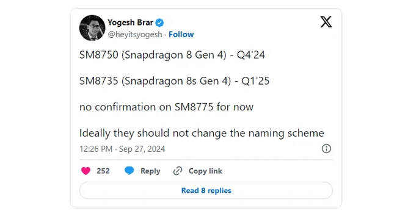

The Snapdragon 8s Gen 3 chip was introduced a few months after the Snapdragon 8 Gen 3. This chip is slightly slower than the flagship version but is designed to reduce phone manufacturing costs without sacrificing flagship-level capabilities. Now, it seems that Qualcomm is set to follow the same strategy for its next chip, the Snapdragon 8 Gen 4, by introducing the Snapdragon 8s Gen 4 in 2025.
If you've been following the news about the Snapdragon 8 Gen 4 chip, you might know that it is expected to be 20% more expensive than its predecessor, the Gen 3. Based on a leak on the social platform X, the Snapdragon 8s Gen 4 is slated to be introduced in the first quarter of 2025 and will be priced lower than the main flagship version, the Snapdragon 8 Gen 4.
The leaker also mentioned that no information is currently available about the SM8775 chip, which is likely the Snapdragon 8+ Gen 4. While an overclocked version of the Snapdragon 8 Gen 4 seems unlikely, recent reports suggest that this chip has achieved a remarkable 4.47 GHz frequency, as seen in the Galaxy S25 Ultra smartphone.
Earlier, another leaker revealed that the production cost of the Snapdragon 8 Gen 4 chip is around $240 per unit, making it almost impossible to build smartphones with this processor for a price between $500 and $600. However, with the introduction of the slower 8s Gen 4 version, phone manufacturers can now offer Snapdragon 8 Gen 3-like performance within this price range.
| Key Detail | Information |
|---|---|
| Chip Introduction | First quarter of 2025 |
| Slower Version | Yes, Snapdragon 8s Gen 4 is slower than Snapdragon 8 Gen 4 |
| Cost Reduction | Designed to reduce phone manufacturing costs |
| Expected Price Range | Expected to be cheaper than Snapdragon 8 Gen 4 |
| Performance | Expected to perform similarly to Snapdragon 8 Gen 3 |
| Leaked Frequency | 4.47 GHz for Snapdragon 8 Gen 4 in Galaxy S25 Ultra |